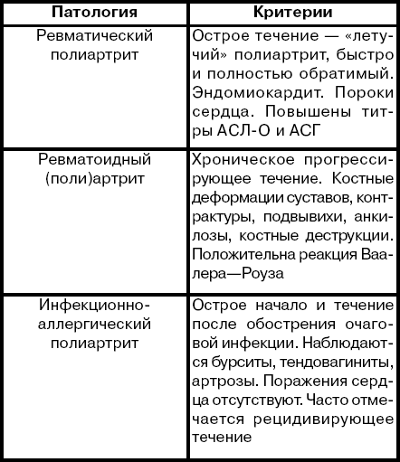
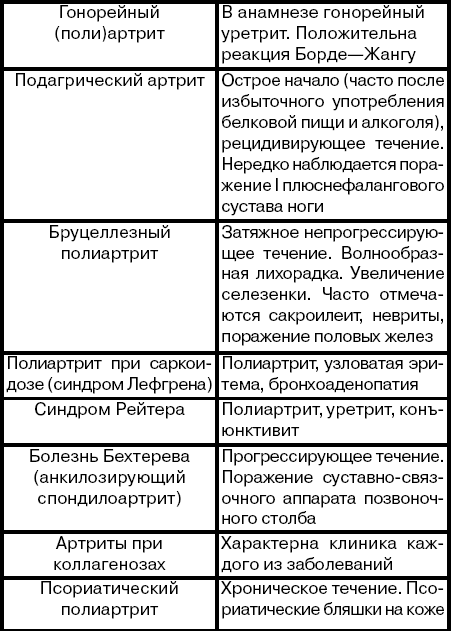

<p style="text-align:justify"><span style="font-size:20px">Ревматический полиартрит необходимо дифференцировать с неревматическими (см. табл.).</span></p><p style="text-align:justify"><span style="font-size:20px">Таблица</span></p><div class="fb2-image" style="font-family: Arial; color: rgb(0, 0, 0); text-align: justify; font-size: 18px; line-height: 27px;"><span style="font-size:20px"></span></div><div class="fb2-image" style="font-family: Arial; color: rgb(0, 0, 0); text-align: justify; font-size: 18px; line-height: 27px;"><span style="font-size:20px"></span></div><div class="fb2-image" style="font-family: Arial; color: rgb(0, 0, 0); text-align: justify; font-size: 18px; line-height: 27px;">&nbsp;</div>